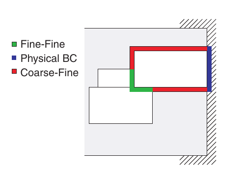
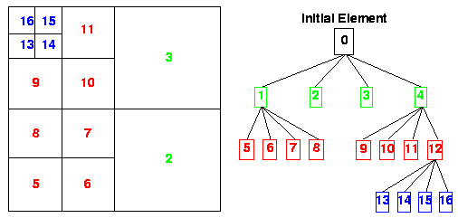
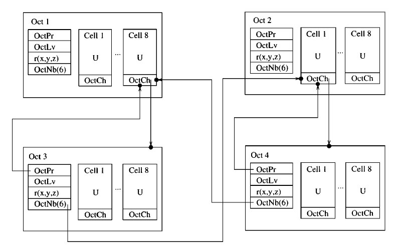
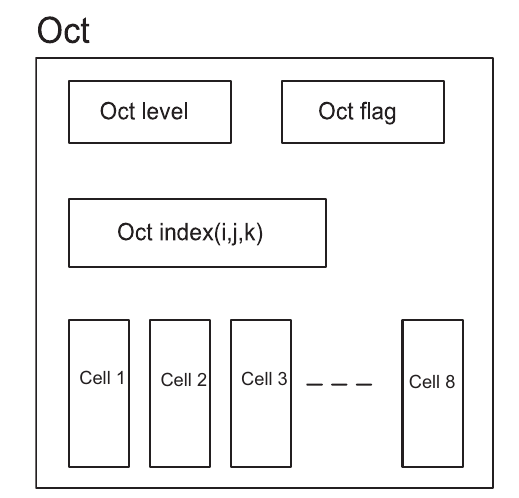
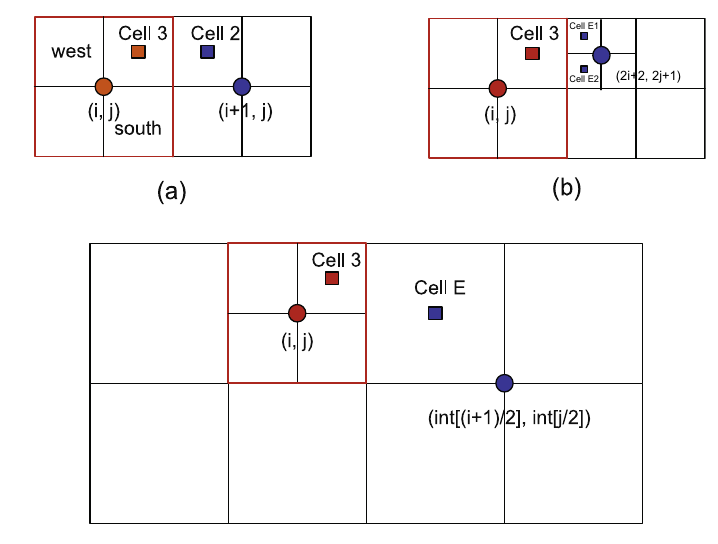

AMR Strategies¶
Introduction¶
Why AMR?¶
In order to effectively utilize the computational resources while remaining the flexibility in solving complex geometries and the prescribed accuracy, Adaptive Mesh Refinement (AMR) is invoked to focus the computational effort and memory usage to where it is needed.
Three main algorithms¶
Three main algorithms have emerged overtime, which we can call them: unstructured (U), block-structured (s), and hierarchical or tree-based (T) AMR.
UAMR¶
Unstructured mesh. Traditionally use graph-based partitioning algorithm, now are supplementing by fast algorithms based on coordinate partitioning and SFCs.
SAMR¶
A sequence of nested structured grids at different hierachies or levels are overlapped with or patched onto each other.
A tree-like data structure is used to facilitate the communication (transfer information) between the regular Cartesian grids at the various hierachies. Each node in this tree-like data structure represents an entire grid rather than simply a cell.
- Pros:
Each node in the tree structure represents an entire grid enables the solver to solve the structured grids efficiently.
- Cons:
Communication patterns between levels can be complex.
Algorithm complexity can be substantial.
Due to the clustering methods used to define the sub-grids, portions of the cumputational dmain covered by a highly refined mesh when it is not needed, resulting a wasted computational effort.
Library¶
Chombo
PARAMESH
SAMRAI
TAMR¶
A qurad-tree/oct-tree data structure is used in 2D/3D to represent the grid hierarchies. Each node stands for a individual cell.
- Pros:
Mesh can be locally refined (increase storage savings)
Better control of the grid resolution (comparing with SAMR)
- Cons:
In conventional quard-tree/oct-tree discretization, the connectivity information between individual cell and its neighbours needs to be stored explicitly. (oct-tree each cell 19 words of computer memory)
large memory overhead to maintain tree-data structures.
- Difficult to parallelize.
data moving: distruct and rebuild the linker.
neighbour finding: need to traverse the tree to locate the closet ancestor (what if ancestor is on another processor?).
Library¶
p4est
Zoltan

{kind=link}
{kind=link}
{kind=link}
{kind=link}
Tree-based AMR algorithm¶
Objectives¶
Reduce the memory overhead required to maintain the information embodies in the tree structure.
Rapid and easy access to the information stored in the tree.
Full Threaded Tree (FTT)¶
Memory requirement: \(2\frac{3}{8}\) words per cell (conventional 19 words per cell).
The actual number of traversed levels required to find a neighbour never exceeds one.
Cell-Based Structured Adaptive Mesh Refinement¶
Optimized FTT.
Cartesian-like indices are used to identify each cell. With these stored indices, the information on the parent, children and neighbours of a given cell can be accessed simply and efficiently.
Memory requirement: \(\frac{5}{8}\) words per cell.
Octant coordinate calculation¶
The indices of the four children octs \((i_s, j_s)\)
The parent of a oct \((i_p, j_p)\)
Neighbour finding¶
Cell3 find east neighbour:
(1). (i+1, j) – hash table – cell exsit (Y/N)?
- (2). If Yes.
Neighbour is the Northwest (NW) cell of cell(i+1, j) – if this cell is a leaf (Y/N)?
Yes – over
No – two neighbours (NW, SW)
- (3). If No.
Neighbour cell has a larger size. cell number is \(\left ( int[\frac{i+1}{2}], int[\frac{j}{2}] \right )\)
At most, two search are sufficient to find a neighbour of a give cell. Half of the neighbours can be reached without consulting the hash table. Statistically, the average number of searches required to find a neighbour of a given cell is one.